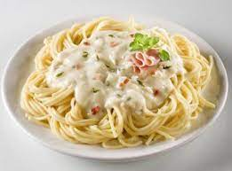

Spaghetti carbonara

Description
What's better than a heaping bowl of spaghetti carbonara? Not much. This deviously simple recipe serves one and takes just 25 minutes to make
Ingredients
- 80g spaghetti
- 1 tbsp extra-virgin olive oil
- 1 small onion, finely chopped
- 65g smoked pancetta
- 1 large garlic clove, finely chopped
- 2 egg yolks
- 30g Parmesan, finely grated, plus extra to serve
Steps
- In a large pan, heat the olive oil over a low heat. Fry the onion, carrot, celery and garlic for 5 mins, or until softened. Add the mince and fry on a medium heat until golden. Turn up the heat, pour in the wine and bubble until reduced. Stir in the tomato purée, chopped tomatoes and stock. Add in the Worcestershire sauce and simmer for 15 mins, or until the liquid has reduced.
- Meanwhile, make the white sauce. Melt the butter in a small saucepan over a low heat and add the flour. Whisk until combined and cook on low for 1-2 mins. Remove from the heat and gradually whisk in the milk until you have a loose sauce. Season. Return to a gentle heat and whisk constantly until the sauce thickens.
- Preheat the oven to gas 6, 200°C, fan 180°C. Layer up the lasagne in a baking dish, starting with a third each of the ragu, then the pasta, then the white sauce. Repeat twice. Top with the Parmesan and mozzarella then bake in the oven for 40-45 mins, until piping hot and crisp and bubbling on top. Serve immediately.